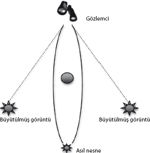
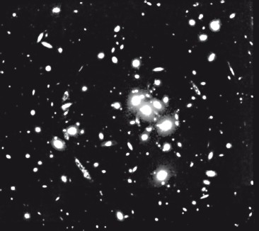
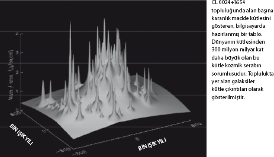

Bunlar bilinen bilinenlerdir. Bunlar bildiğimizi bildiklerimizdir. Bilinen bilinmeyenler vardır. Yani, bilmediğimizi bildiğimiz şeyler vardır. Ama bilinmeyen bilinmeyenler de vardır. Bilmediğimizi bilmediğimiz şeyler vardır.
Donald Rumsfeld
Evrenin bir başlangıcı olduğunu, bu başlangıcın geçmişte sonlu ve ölçülebilir bir zaman olduğunu yerli yerine oturttuktan sonra sorulması doğal bir soru gelir: "Evren nasıl son bulacak?"
Aslına bakarsanız beni asıl alanım olan parçacık fiziğinden uzaklaştırıp kozmolojiye yönelten soru da buydu. Evrende gözün ya da teleskopun görmediği çok fazla şey olduğu, galaksimizdeki gazın ve yıldızların hareketlerine ilişkin 1970'ler ve 1980'lerde yapılan ayrıntılı ölçümler ve galaksilerin topluluk denilen büyük galaksi grupları halinde hareket etmelerinin anlaşılması sayesinde giderek açıklık kazanmıştı.
Muazzam bir büyüklüğü olan galaksi ölçeğinde iş başındaki başlıca güç kütleçekimdir, bu yüzden bu ölçeklerde nesnelerin hareketlerini ölçmek bu hareketin itici gücü olan kütleçekimi araştırmamızı mümkün kılar. Bu ölçümler Amerikalı astronom Vera Rubin ve meslektaşlarının 1970'lerin başında yaptığı öncü çalışmalarla başlamıştır. (Rubin doktorasını Georgetown Üniversitesi'nden almıştır; akşam saatlerinde geldiği dersler sırasında kocası onu arabada bekliyordu, çünkü Rubin araba kullanmayı bilmiyordu. Doktora eğitimi için Princeton Üniversitesi'ne de başvurmuştu, ama Princeton'ın astronomi alanındaki lisans sonrası programlarına kadınlar ancak 1975'ten sonra alınmaya başladı.) Rubin bu alanda yükselerek Kraliyet Astronomi Cemiyeti'nin Altın Madalyası'yla ödüllendirilen ikinci kadın oldu. Galaksimizin kendi etrafındaki dönüş hızıyla ilgili çığır açıcı ölçümlerinden ötürü bu ödüle ve hak ettiği diğer ödüllere layık görülmüştü. Galaksimizin merkezinden giderek uzaklaşan yıldızları ve sıcak gazı gözleyerek bu bölgelerin kendi etraflarında dönüş hızlarının başkalarının tahmin ettiğinden çok daha yüksek olduğunu bulmuştu. Onun çalışmaları sayesinde, kozmologlar nihayetinde, bu hareketi açıklamanın tek yolunun, galaksimizde bütün bu sıcak gaz ve yıldızların kütlesini toplamakla elde edilenden ciddi oranda çok daha fazla kütlenin bulunduğunu varsaymak olduğu kanısına ulaşmıştı.
Gelgelelim bu bakış açısında bir sorun vardı. Evrende gözlenen hafif element (hidrojen, helyum ve lityum) bolluğunu gayet güzel açıklayan hesaplar, normal maddeyi oluşturan protonlar ve nötronların da Evren'de ne miktarda olması gerektiğini söyler. Çünkü tıpkı bir yemek tarifinde (bu örnekte nükleer yemek) olduğu gibi sonuçta ortaya çıkan yemeğin miktarı başta içine her malzemeden ne kadar koyduğunuza bağlıdır. Tarifteki malzemelerin iki katını kullanırsanız (örneğin iki yerine dört yumurta kırarsanız) sonuçta ortaya çıkan yemek, bu örnekte omlet daha fazla olur. Gelgelelim, Büyük Patlama'dan çıkan evrendeki proton ve nötronların, gözlenen hidrojen, helyum ve lityum bolluğuna uygun olarak belirlenen başlangıçtaki yoğunluğu yıldızlarda ve sıcak gazda görebildiğimiz madde miktarının iki katı kadardır. Peki bu parçacıklar nerededir?
Protonları ve nötronları saklama yollarını hayal etmek kolaydır (kar topları, gezegenler, kozmologlar... hiçbiri de parlamaz), bu yüzden birçok fizikçi, karanlık nesnelerde de görünen nesnelerdeki kadar fazla sayıda proton ve nötron bulunduğu tahminini yürütmüştür. Gelgelelim galaksimizdeki maddenin hareketini açıklamak için ne kadar "karanlık madde" bulunması gerektiğini hesapladığımızda, toplam maddenin görünen maddeye oranının 2'ye 1 değil, 10'a 1'e yakın olduğunu buluruz. Bu bir hata değilse karanlık madde protonlar ve nötronlardan oluşuyor olamaz. Çünkü bunu sağlamaya yetecek kadar proton ve nötron yoktur.
Farklı bir çekirdek yapısı olan karanlık maddenin var olması olasılığını öğrenmek, 1980'lerin başında genç bir parçacık fizikçisi olarak benim için son derece heyecan vericiydi. Bu, kelimenin tam anlamıyla, evrendeki başat parçacıkların bildiğimiz nötron ve protonlar değil, muhtemelen yeni bir tür egzotik bir temel parçacık; bugün Dünya'da bulunmayan, ama yıldızların arasından akan, galaksi dediğimiz o kütleçekim gösterisini sessiz sedasız götüren gizemli bir şey olduğu anlamına geliyordu.
En azından benim için daha da heyecan vericisi, bütün bunların gerçekliğin doğasını temelden yeniden aydınlatmayı sağlayacak üç araştırma çizgisini işaret ediyor olmasıydı:
1) Bu parçacıklar, yukarıda betimlediğim hafif elementler gibi Büyük Patlama sırasında oluşmuşlarsa bugün evrenimizdeki muhtemelen egzotik yeni parçacıkların ne derece bol olduğunu tahmin edebilmek için temel parçacıklar arasındaki etkileşimleri yöneten kuvvetler hakkındaki fikirleri (elementlerin miktarını belirlemek için ilgili çekirdekler arasındaki etkileşimler yerine) kullanabilmemiz gerekir.
2) Parçacık fiziğindeki kuramsal fikirlere dayanarak evrendeki karanlık maddenin toplam miktarını çıkarsamak mümkün olabilir ya da karanlık maddeyi tespit etmek için, evrendeki toplam madde miktarını, dolayısıyla evrenimizin geometrisini (açık, kapalı ya da düz) verecek yeni deneyler önermek mümkün olabilir. Fiziğin işi görebildiğimiz şeyleri açıklamak için göremediğimiz şeyler icat etmek değil, göremediğimiz şeyleri nasıl görebileceğimizi çözmek, önceden görünmeyenleri, bilinen görünmeyenleri görmektir. Karanlık madde olmaya aday her yeni temel parçacık, galaksimizde dolaşan karanlık madde parçacıklarını, Dünya onların uzaydaki hareketiyle kesiştiğinde onları tespit edebilmek için Dünya üzerinde aygıtlar kurarak belirlemeye yönelik yeni deneyler düzenleme olasılıklarının kapısını aralar. Karanlık madde parçacıkları bütün galaksiye gruplar halinde dağılmışlarsa şimdi de burada bizimledirler. Çok uzaklardaki nesneleri araştırmak için teleskoplar kullanmak yerine, karanlık madde parçacıklarının varlığını aydınlatmak üzere Dünya üzerine kurulmuş detektörlerden yararlanılabilir.
3) Karanlık maddenin niteliğini ve miktarını belirleyebilirsek evrenin nasıl son bulacağını da belirleyebiliriz.
Son olasılık hepsinin en heyecan vericisi gibi görünüyordu, bu yüzden de meseleyi açmaya onunla başlayacağım. Aslına bakarsanız kozmolojiye de evrenin nasıl son bulacağını bilen ilk insan olmak istediğim için bulaşmıştım.
O zamanlar bu iyi bir fikirmiş gibi görünüyordu.
Einstein genel görelilik kuramını geliştirdiğinde, kuramın kalbinde, uzayın madde ya da enerjinin varlığıyla bükülmesi olasılığı yatıyordu. Bu kuramsal fikir, 1919'da iki ayrı gözlemde, bir güneş tutulması sırasında yıldız ışığının Güneş'in etrafında büküldüğünün gözlenmesi sonucu bir spekülasyon olmaktan çıkmıştı. Yıldız ışığı, Güneş'in etrafında tam da Einstein'ın, Güneş'in varlığı etrafındaki uzayı büküyorsa olması gerektiğini tahmin ettiği derecede bükülüyordu. Einstein hemen ün kazandı, her evde tanınan bir isim oldu. (Bugün çoğu insan onun kazandığı bu ünün, o tarihten 15 yıl önce bulduğu E=mc2 denkleminden ileri geldiğini sanır, ama öyle değildi.)
Şimdi, uzayın bükülmesi olasılığı varsa, evrenimizin geometrisi birden çok daha ilginç bir hal alır. Toplam madde miktarına bağlı olarak evrenimiz üç farklı geometriden birinde olabilir, ya "açık", ya "kapalı" ya da "düz"dür.
Bükülmüş üç boyutlu bir uzayın neye benzeyeceğini gözümüzde canlandırmak zordur. Hepimiz üç boyutlu varlıklar olduğumuzdan, üç boyutlu bükülmüş bir uzayı sezgisel olarak canlandırmamız, Düzdiyar (Flatland) isimli şu meşhur kitaptaki iki boyutlu varlıkların, dünyaları bir kürenin yüzeyi gibi bükülmüş olsa üç boyutlu bir gözlemciye nasıl görüneceğini hayal etmeleri kadar zordur. Üstelik bükülme çok küçükse gündelik hayatta nasıl fark edileceğini hayal etmek de zordur, tıpkı, en azından Ortaçağ'da birçok insanın, düz göründüğü için Dünya'nın düz olduğunu düşünmesi gibi.
Bükülmüş üç boyutlu evrenleri resmetmek zordur, kapalı bir evren üç boyutlu bir evrene benzer, eh, insanın gözü epeyce korkuyor. Ama bu evrenin bazı yönlerini resmetmek kolaydır. Kapalı bir evrende bir yönde yeterince uzağa bakarsanız, kafanızın arkasını görürsünüz.
Bu egzotik geometrilerden bahsetmek eğlenceli ya da etkileyiciymiş gibi görünse de işleyiş bakımından varlıklarının çok daha önemli sonuçları vardır. Genel görelilik, yıldızlar ve galaksiler gibi maddenin, hatta çok daha egzotik karanlık maddenin enerji yoğunluğuna hakim olduğu kapalı bir evrenin bir gün Büyük Patlama'nın tersi bir süreçle (Büyük Çöküş deyin dilerseniz) yeniden çökeceğini bize kesin bir dille söyler. Açık bir evren sonlu bir hızla sonsuza dek genişlemeyi sürdürecektir, düz bir evrense sınırdadır, genişlemesi yavaşlar, ama hiç durmaz.
Karanlık madde miktarının, dolayısıyla evrendeki kütlenin toplam yoğunluğunun belirlenmesi, asırlık (en azından T. S. Eliot kadar eski) bir soruya açıklık getirme vaadinde bulunur: Evren bir patlamayla mı yoksa bir çöküşle mi sona erecek? Karanlık maddenin toplam miktarını belirleme macerasının tarihi en azından yarım yüzyıl öteye uzanıyor, bu konuda koca bir kitap bile yazılabilir. Aslında Quintessence adlı kitabımda bunu yapmaya çalışmıştım. Gelgelelim birazdan (hem kelimelerle hem sonra bir resimle) göstereceğim üzere, bir tek resmin en az bin (belki de yüz bin) kelimeye bedel olduğu doğrudur.
Evrende kütleçekimle birbirine bağlanmış en büyük nesneler galaksilerin oluşturduğu süper topluluklardır. Binlerce, belki de daha fazla galaksinin bulunabileceği bu gibi nesneler on milyonlarca ışık yılına yayılmış olabilirler. Çoğu galaksi böyle süper topluluklar içinde yer alır, bizim galaksimiz de merkezi bizden 60 milyon ışık yılı uzakta bulunan Virgo (Başak) galaksi süper topluluğundadır.
Süper topluluklar çok büyük ve çok kütleli olduklarından, temelde bir şeyin içindeki bir şey bu süpertoplulukların içindedir. Dolayısıyla galaksi süpertopluluklarının ağırlığını ölçüp evrendeki bu süpertoplulukların toplam yoğunluğunu tahmin edebilirsek karanlık madde de dahil olmak üzere "evreni tartabiliriz." Sonra Genel Görelilik denklemlerini kullanarak evrenin kapalı olmasına yetecek kadar madde olup olmadığını belirleyebiliriz.
Buraya kadar iyi, iyi de on milyonlarca ışık yılı uzaktaki nesneleri nasıl tartacağız? Basit efendim. Kütleçekimi kullanın!
Albert Einstein, 1936'da, amatör bir astronom olan Rudi Mandl'ın dikkat çektiği şeylerin peşinden giderek Science dergisinde "Bir Yıldızın Kütleçekim Alanındaki Işığın Sapmasıyla Mercek Benzeri Eylemi" ("Lens-Like Action of a Star by the Deviation of Light in the Gravitational Field") başlıklı kısa bir makale yayınlamıştı. Einstein bu kısa makalesinde uzayın bir mercek gibi davranabileceğini, tıpkı okuma gözlüklerimin mercekleri gibi ışığı kırıp büyütebileceğini, bu dikkat çekici olguyu kanıtlıyordu.
1936'da daha iyicil, daha nazik bir hava esiyordu; Einstein'ın nihayetinde seçkin bir bilim dergisinde yayınlanmış olan makalesinin gayri resmi bir havada kaleme alınmış başlangıç satırlarını okumak ilginç bir deneyimdir: "Bir süre önce R. W. Mandl beni ziyaret ederek, onun isteği üzerine yaptığım küçük bir hesaplamanın sonuçlarını yayınlamamı rica etti. Bu not onun bu ricası üzerine kaleme alınmıştır." Belki de o Einstein olduğu için böyle bir gayri resmiyet ona uygun düşüyor, ama ben bu dilin o dönemin, bilimsel sonuçların her zaman konuşma dilinden uzak bir üslupla kaleme alınmadığı günlerin bir ürünü olduğunu ileri sürmeyi tercih ediyorum.
Her halûkârda, daha önce de belirttiğim gibi, maddenin varlığı halinde uzay büküldüğünde ışığın da bükülmüş yollarda ilerlediği Genel Görelilik Kuramı'nın ilk önemli tahminiydi, Einstein'ın uluslararası bir üne kavuşmasını sağlayan da bu keşif olmuştu. Bu yüzden de (kısa süre önce anlaşıldığı üzere) Einstein'ın aslında Genel Görelilik Kuramı'nı tamamlamasından epey önce, 1912'de, astronomları fikirlerini sınamaya ikna edecek gözlenebilir bazı fenomenler ararken, esasen 1936'da Mandl'ın ricası üzerine yayınladığına benzer hesaplamalar gerçekleştirmiş olması herhalde kulağa pek de şaşırtıcı gelmiyor. 1912'de yaptığı hesaplamalarda, 1936'da kaleme aldığı makalede belirttiği sonuca, yani "bu fenomenin gözlenmesi şansı yüksek değildir" sonucuna vardığından herhalde, bu ilk çalışmasını yayınlama zahmetine hiç girmemişti. Aslına bakarsanız, defterlerinde her iki çalışmayı da incelediğimizde, aynı hesabı sonradan yaparken, ilk hesabı 24 yıl önce yaptığını hatırlamış olduğunu kesin bir dille söyleyemeyiz.
Einstein her iki çalışmasında da bir kütleçekim alanında ışığın kırılmasının, parlak bir nesnenin araya giren kütle dağılımının arkasında bulunması halinde, çeşitli yönlere giden ışık huzmelerinin, araya giren kütle dağılımının etrafında kırılıp yeniden birleşebileceği, tıpkı normal bir mercekten geçerken yaptıkları gibi ya asıl nesnenin büyük görünmesine yol açacakları ya da asıl nesnenin görüntüsünün bazıları çarpıtılmış olabilecek çok sayıda görüntüsünü ortaya çıkarabilecekleri anlamına gelebileceğini görmüştü. (Aşağıdaki şekle bakınız.)

Einstein uzaktaki bir yıldızın, arka planda araya giren bir yıldız yüzünden mercek etkisine maruz kalmasıyla ilgili tahminleri hesaplarken, bu etki o kadar küçük çıkmıştı ki kesinlikle ölçülemez gibi görünmüş, bu da onun yukarıda bahsettiğimiz satırları kaleme almasına, böyle bir olgunun gözlenmesinin ihtimal dışı olduğunu söylemesine neden olmuştu. Sonuçta Einstein makalesinin pratik değerinin çok az olduğu sonucuna vardı. Science'ın o zamanki editörüne yazdığı mektupta şöyle diyordu: "Bay Mandl'ın benden söküp çıkardığı bu küçük makalenin yayınlanmasında gösterdiğiniz işbirliğinden ötürü teşekkürlerimi kabul edin. Pek değeri yok, ama adamcağızı memnun edecek."
Gelgelelim Einstein bir astronom değildi, birinin Einstein'ın tahmin ettiği bu etkinin ölçülebilir olmakla kalmayıp yararlı olduğunu fark etmesi gerekiyordu. Yararı uzaktaki nesnelerin galaksiler, hatta galaksi toplulukları gibi çok daha büyük sistemler tarafından merceklenmesine uygulanmasından geliyordu, yıldızların yıldızları merceklemesine uygulanmasından değil. Einstein'ın yayınını izleyen birkaç ay içinde Caltech'in parlak astronomlarından Fritz Zwicky The Physical Review'da bu olgunun kesinlikle mümkün ve uygulanabilir olduğunu gösteren bir makale yayınladı. (Bu arada Einstein'ı da yıldızların değil galaksilerin olası mercekleme etkisini görmezden geldiği için alaşağı edivermiş oldu.)
Zwicky'nin çabucak parlayıveren bir mizacı vardı, ayrıca kendisi zamanının epeyce ilerisindeydi. Daha 1933'te Coma topluluğundaki galaksilerin göreli hareketlerini analiz etmiş, Newton'ın hareket yasalarını kullanarak galaksilerin birbirlerinden ayrılıp topluluğu bozacak kadar hızlı hareket ettiklerini belirlemiş, ancak toplulukta olduğundan 100 kat daha fazla kütle bulunmasının bunu engellediği, bu oranın yalnızca yıldızlarla açıklanamayacağı sonucuna varmıştı. Bu yüzden Zwicky'nin karanlık maddeyi keşfetmiş kişi olarak tanınması gerekir, ama o zaman bu keşfi o kadar dikkat çekici bulunmuştu ki çoğu astronom bu sonucun o kadar da egzotik olmayan bir açıklaması olabileceğini düşünmüştü.
Zwicky'nin 1937'de kaleme aldığı bir sayfalık makale de aynı ölçüde dikkat çekiciydi. Kütleçekimsel merceklemenin üç kullanımı olduğunu ileri sürüyordu: (1) Genel göreliliğin sınanması; (2) Araya giren galaksilerin, Dünya'daki teleskopların göremeyeceği kadar uzaktaki nesneleri büyütmeye yarayacak bir tür teleskop olarak kullanılması; (3) daha da önemlisi, galaksi topluluklarının neden görünen maddenin açıklayabildiğinden daha ağır göründükleri muammasıyla ilgili olarak şöyle diyordu: "Işığın nebulaların etrafındaki kırılmalarının gözlenmesi nebula kütlelerini en doğrudan biçimde belirlemeyi, yukarıda belirtilen uyuşmazlığı aydınlatmayı sağlayabilir."
Zwicky'nin makalesinin üzerinden 74 yıl geçmiştir, ama bu satırlar kulağa, kütleçekimsel merceklemenin evrenin araştırılmasında kullanılması yönünde modern bir öneri gibi gelir. Yaptığı her öneri gerçekten de değerlendirilmiştir, aralarında en önemlisi de sonuncu önerisiydi. Araya giren galaksilerin, uzaktaki kuasarları kütleçekimsel merceklemesi ilk kez 1987'de gözlendi. 1998'de, Zwicky'nin kütleçekimsel merceklemeyi kullanarak nebulaları tartmayı önermesinden 61 yıl sonra da kütleçekimsel merceklemeyi kullanarak büyük bir galaksi topluluğunun kütlesi belirlendi.

O yıl, fizikçi Tony Tyson ve meslektaşları, bugün artık hükmü kalmamış Bell Laboratuarları'nda (transistörün keşfinden kozmik mikrodalga ışınımının keşfedilmesine kadar soylu ve Nobelli büyük bilim geleneğinin taşıyıcısı olmuş bu kurumda) uzaklarda, yaklaşık 5 milyar ışık yılı uzakta bulunan, CL 0024+1654 gibi renkli bir ismi olan büyük bir galaksi topluluğunu gözlediler. Hubble uzay teleskopundan alınan bu güzel görüntüde bu topluluğun arkasında 5 milyar ışık yılı daha uzakta bulunan bir galaksinin çoğul görüntüsünü, genelde daha yuvarlak olan galaksilerin ortasında son derece çarpılmış ve uzun şekiller halinde görebiliriz.
Bu görüntüye bakmak insanın hayalgücünü besliyor. Öncelikle fotoğrafta gördüğünüz her nokta bir yıldız değil, bir galaksidir. Her galakside muhtemelen yüz milyar yıldız, bunların yanı sıra muhtemelen yüz milyarlarca yıldız, belki de uzun zaman önce kaybolup gitmiş medeniyetler vardır. Uzun zaman önce diyorum, çünkü bu görüntü 5 milyar yaşında. O ışık, bizim Güneş'imiz ve Dünya'mızın oluşmasından 500 milyon yıl önce salınmış. Fotoğrafta gördüğünüz yıldızların birçoğu artık yok, nükleer yakıtlarını milyarlarca yıl önce tüketmişler. Bunların da ötesinde çarpılmış görüntüler Zwicky'nin savunduğu şeyin mümkün olduğunu gösteriyor. Görüntünün merkezinin solunda kalan, çarpılmış büyük şekiller, aslında muhtemelen hiç görünmeyecek olan uzaktaki o galaksinin son derece büyütülmüş (ve uzamış) görüntüleri.
Bu görüntüden yola çıkıp galaksi topluluğunun kütlesel dağılımını belirlemeye çalışmak matematiksel olarak karmaşık bir iştir. Tyson, bunu başarabilmek için galaksi topluluğunun bir bilgisayar modelini çıkardı ve Genel Görelilik yasasını kullanarak topluluğun kaynağından gelen ışınların izleyebileceği bütün farklı yolların izini sürdü, gözlemlerine en uygun düşen yolu bulana kadar da bu işlemi sürdürdü. Toz duman yatıştığında Tyson ve meslektaşları, ilk fotoğrafta görülen bu sistemde kütlenin tam olarak nerede bulunduğunu gösteren bir grafik elde ettiler.

Bu grafikte bir tuhaflık vardır. Grafikteki çıkıntılar asıl fotoğrafta görünebilir olan galaksilerin yerlerine denk düşmektedir, ama sistemdeki kütlenin çoğu galaksilerin arasında, düz, karanlık bir dağılım içindedir. Aslına bakılırsa bu sistemde galaksilerin arasında, sistemde görünür maddenin içerdiğinin 40 katından fazla kütle vardır. (Etraflarındaki sıcak gaz kütlesinde görünebilir olan maddeyle birlikte yalnızca yıldızlarda olan kütleden 300 kat daha fazla kütle söz konusudur.) Açıktır ki karanlık madde galaksilerle sınırlanmış değildir, galaksi topluluklarının da yoğunluğunu belirler.
Benim gibi parçacık fizikçileri, karanlık maddenin galaksi topluluklarının kütlesini de belirlediğinin bulunmasına şaşırmadılar. Elimizde doğrudan bir kanıt bulunmasa da hepimiz karanlık madde miktarının düz bir evrene yol açmaya yetecek kadar olması gerektiğini umuyorduk, bu da evrende görünen maddenin 100 katını aşkın miktarda karanlık madde olması gerektiği anlamına geliyordu.
Nedeni de gayet basitti: Matematiksel bakımdan güzel olan yegane evren, düz bir evrendir. Neden mi? Dinleyin.
Karanlık maddenin toplam miktarı düz bir evren yaratmaya yeterli olsa da olmasa da kütleçekimsel merceklemeyle elde edilene benzer gözlemler ve astronominin başka alanlarında yapılan daha yakın tarihli gözlemler, galaksiler ve topluluklarda bulunan toplam karanlık madde miktarının Büyük Patlama Nükleosenteziyle ilgili hesaplamaların mümkün gördüğü miktarı çok çok aştığını doğrulamıştır. (Bu arada hatırlatayım: Kütleçekimsel mercekleme uzayın ağır nesneler etrafında bölgesel olarak bükülmesinden kaynaklanır. Evrenin düzlüğü ise ağır nesnelerin etrafındaki bölgesel kıvrılmaları dikkate almaz, uzayın genel ortalama bükülme şeklini ifade eder.) Karanlık maddenin (galaksilerden galaksi topluluklarına varıncaya kadar birçok farklı astrofiziksel bağlamda bağımsız olarak tespit edilmiş olduğunu tekrarlayayım) yepyeni bir şeyden, normalde Dünya'da bulunmayan bir şeyden oluştuğundan artık emin sayılırız. Bu şey her neyse, yıldızların maddesi değildir, Dünya'nın maddesi de değildir! Ama bir şeydir!
Galaksimizdeki karanlık maddeyle ilgili bu ilk çıkarımlar, yepyeni bir deneysel fizik alanı doğurmuştur, bu gelişmede kendimin de rolü olduğunu belirtmekten mutluluk duyuyorum. Yukarıda belirttiğim üzere karanlık madde parçacıkları her tarafımızdadırlar. Bu satırları yazdığım odanın içinde oldukları gibi, "dışarda", uzayda da bulunmaktadırlar. Dolayısıyla karanlık maddeyi ve onu oluşturan yeni tür temel parçacığı aramak için deneyler gerçekleştirebiliyoruz.
Bu deneyler madenlerde, yerin altındaki tünellerde gerçekleştiriliyor. Neden yeraltında peki? Çünkü Dünya'nın yüzeyinde Güneş'ten ve çok daha uzaktaki nesnelerden gelen her tür kozmik ışına sürekli maruz kalıyoruz. Karanlık madde niteliği gereği elektromanyetik bir etkileşime girip ışık üretmediğinden, normal maddeyle girdiği etkileşimlerin son derece zayıf olduğunu, bu yüzden de onu tespit etmenin son derece zor olduğunu varsayıyoruz. Her gün milyonlarca karanlık madde parçacığının bombardımanına uğruyor olsak da çoğu bizim burada olduğumuzu "bilmeden", biz fark etmeksizin içimizden ve Dünya'nın içinden geçip gidecektir. Dolayısıyla bu kuralın çok nadir olan istisnalarının etkilerini, madde atomlarına çarpıp sıçrayan karanlık madde parçacıklarını tespit etmek istiyorsanız çok nadir gerçekleşen olayları tespit etmeye hazırlıklı olmanız gerekir. Bunun en başta ilkesel olarak mümkün olabilmesi için kozmik ışınlardan yeterince korunduğunuz tek yer yeraltıdır.
Gelgelelim ben bu satırları kaleme alırken aynı derecede heyecan verici bir imkan doğuyor. İsviçre'nin Cenevre kentindeki Büyük Hadron Çarpıştırıcısı, dünyanın en büyük ve en güçlü parçacık hızlandırıcısı kısa süre önce çalışmaya başladı. Fakat bu aygıtın içinde protonların birbirleriyle çarpıştırıldığı çok yüksek enerjilerde evrenin ilk anlarına benzer koşulların, yalnızca mikroskopla görülebilecek kadar küçük alanlarda dahi olsa yeniden yaratılacağına inanmak için birçok nedenimiz var. Bu gibi alanlarda evrenin ilk anlarında karanlık maddeyi ortaya çıkarmış etkileşimler bu kez laboratuar ortamında gerçekleşebilir! İşte bu yüzden büyük bir yarış var. Karanlık madde parçacıklarını ilk kim tespit edecek? Yeraltındaki deneyleri yürüten bilim insanları mı yoksa Büyük Hadron Çarpıştırıcısı deneyini yürüten bilim insanları mı? Ama haberler iyi, yarışı hangi grup kazanırsa kazansın, kaybeden olmayacak. Nihai madde parçacığının aslında ne olduğunu öğrenerek hepimiz kazanacağız.
Bahsettiğim astrofiziksel ölçümler, karanlık maddenin kimliğini açıklamasa da miktarının ne kadar olduğunu söylüyor. Yukarıda anlattığıma benzer kütleçekimsel mercekleme ölçümleri sonucu elde edilen güzel çıkarımların yanı sıra galaksi topluluklarında X ışınlarının gözlemlenmesiyle evrendeki toplam madde miktarına dair doğrudan son bir belirleme çalışması yapıldı. Toplulukların toplam kütlelerine ilişkin bağımsız tahminlerde bulunmak mümkündür, çünkü X ışını üreten galaksi topluluklarındaki gazın ısısı bu gazları salan sistemin toplam kütlesiyle ilişkilidir. Elde edilen sonuçlar biz bilim insanlarının birçoğu için şaşırtıcıydı, biraz önce çıtlattığım üzere tam bir hayalkırıklığıydı. Çünkü kelimenin hem tam anlamıyla hem metaforik anlamıyla toz duman yatıştığında, galaksilerin ve galaksi topluluklarının içindeki ve çevresindeki toplam kütlenin, bugün düz bir evrene yol açması gereken toplam kütle miktarının ancak yüzde 30'una denk geldiği belirlendi. (Dikkat edin, bu miktar görünen maddenin açıklayabileceği kütle miktarının 40 katından fazladır, görünen madde düz bir evren için gerekli kütle miktarının yüzde 1'inden daha azını oluşturmaktadır.)
Einstein, yaptığı "küçük yayın"ın yararsızlıkla uzaktan yakından bir alakası olmadığını görse şaşardı. Einstein'ın bükülmüş uzaya doğru attığı o küçük adım, kozmosa yeni pencereler açan dikkat çekici yeni deneysel ve gözlemsel aygıtlarla, onu hayranlığa ve memnuniyete boğacak yeni kuramsal gelişmelerle, muhtemelen tansiyonunu yükseltecek karanlık maddenin keşfiyle tamamlanarak dev bir sıçramaya dönüştü. 1990'ların başına gelindiğinde kozmolojinin kutsal kasesine ulaşıldığı açıklık kazanmıştı. Gözlemler açık bir evrende, bu yüzden sonsuza kadar genişleyecek bir evrende yaşadığımızı ortaya koymuştu. Öyle miydi acaba?